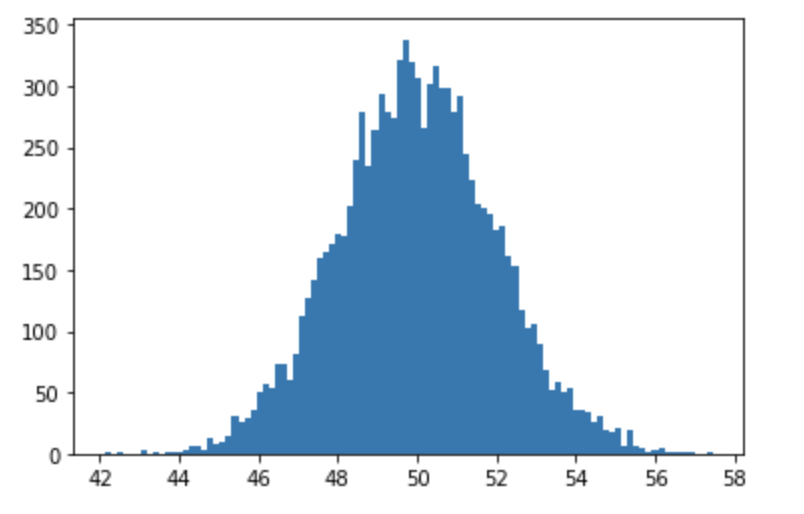
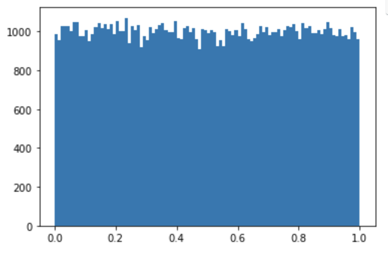

[Python] Numpy-1
Numpy -1
오늘은 Numpy 에 대하여 알아보도록 하겠습니다. Numpy 란 Numerical Python 의 약자입니다. 대규모 다차원 배열과 행렬 연산에 필요한 다양한 함수를 제공합니다.
Numpy module
Numpy의 자료구조를 배워보도록 하겠습니다. ndarray 배열에 대하여 배워보도록 하겠습니다.
Numpy는 ndarray 라고 불리는 n-차원의 배열을 제공합니다.
Numpy & Pandas
pandas module은 data handling, machine learing 에 학습할 데이터를 준비하는 module입니다.
Numpy는 vector와 matrix 연산에 특화되어 있습니다. 또한 Pandas와 Matplotlib의 기반이 되는 module 이며 machine learning, deep learning 에서 많이 사용됩니다.
Numpy 설치
numpy를 실행해보아요 !! 하지만 깔려있지 않기 때문에 Numpy 모듈을 설치하고 진행해야 합니다.
설치하는 방법에는 두가지 방법이 있습니다.
-
Pip3 install numpy
-
conda install numpy
주의 할점은 꼭 설정된 가상환경을 활성화 시킨 이후에 명령어를 작성하셔야 합니다.
Numpy VS List
ndarray의 특징 : python의 list와 상당히 유사 (표로 작성해봅시다 !!)
- python의 list 는 다른 데이터 타입을 같이 list안에 저장이 가능합니다.
- Numpy의 ndarray는 모두 같은 데이터 타입을 사용해야 해요.
- Python의 list 보다 메모리 효율이나 실행속도면에서 우위가 있습니다.
하기 예제를 보면서 차이점을 찾아보도록 하겠습니다.
#### List
a = [1,2,3,4,5] # python의 list
print(a) # [1,2,3,4,5] > list literal
print(type(a))# <class 'list'>
#### Numpy
import numpy as np
arr = np.array([1,2,3,4,5])
arr = np.array(파이썬의 list)
print(arr) #[1 2 3 4 5] 콤마로 구분되지 않고 띄어쓰기로 구분됩니다.
print(type(arr)) # <class 'numpy.ndarray'>
print(arr.dtype) # int64(int : 정수, 64:64bit)
print(arr[0]) # 1 > python 에서는 'int'
print(type(arr[0])) # <class 'numpy.int64'> class type이 다름
arr = np.array([100,3.14,True,'Hello']) # Numpy 안에는 같은 데이터 타입이 들어가야합니다.
print(arr) # ['100' '3.14' 'True' 'Hello'] 가능한 데이터 타입을 일치시켜서 출력
다차원 ndarray를 만들어 보아요! Python의 list는 중첩리스트만 존재해요!
a = [[1,2,3], [4,5,6]] # python 에서는 2차원 리스트라고 부르지는 않아요 !
arr = np.array(a) print(arr) print(arr[1] [1])
a = [[1,2,3], [4,5,6]] # python 에서는 2차원 리스트라고 부르지는 않아요 ! arr = np.array(a, dtype =np.float64)# 지정하지 numpy가 자동으로 판단해서 지정 print(arr)
[[1. 2. 3.] [4. 5. 6.]]
ndarray의 차원 관련 속성을 알아보아요!!
a = [1, 2, 3, 4]
arr = np.array(a, dtype=np.float64)
print(arr) #[1. 2. 3. 4.]
print(arr.ndim) #ndim > 차원의 개수 : 1
print(arr.shape) # 차원의 개수와 각차원의 요소를 tuple로 표현
# (4,)
a = [[1, 2, 3],
[4, 5, 6],
[7, 8 ,9],
[10, 11, 12]]
arr = np.array(a, dtype=np.float64)
print(arr)
print(arr.ndim) #ndim > 차원의 개수 : 2
print(arr.shape) # 차원의 개수와 각차원의 요소를 tuple로 표현
# (4, 3)
a = [[[1, 2, 3],
[4, 5, 6]],
[[1, 2, 3],
[4, 5, 6]]]
arr = np.array(a, dtype=np.float64)
print(arr)
'''
[[[1. 2. 3.]
[4. 5. 6.]]
[[1. 2. 3.]
[4. 5. 6.]]]
'''
print(arr.ndim) #ndim > 차원의 개수 : 3
print(arr.shape) # 차원의 개수와 각차원의 요소를 tuple로 표현
# (2, 2, 3)
numpy array(ndarray)의 크기를 알아보아요!
a = [[1,2,3], [4,5,6], [7,8,9], [10,11,12]] # 4 X 3
arr = np.array(a, dtype = np.float64)
print(arr)
print(arr.size) # 12 // 현재 np가 가지고 있는 모든요소의 개수
print(len(arr)) #4 // 첫번째 차원의 요소 개수를 리턴 // 행의 개수를 리턴합니다.
print(arr.shape) # (4,3)
arr.shape = (2, 6) # shape을 변경이 가능
print(arr)
'''
[[ 1. 2. 3. 4. 5. 6.]
[ 7. 8. 9. 10. 11. 12.]]
'''
arr.shape = (3, 2, 2)
print(arr)
'''
[[[ 1. 2.]
[ 3. 4.]]
[[ 5. 6.]
[ 7. 8.]]
[[ 9. 10.]
[11. 12.]]]
'''
arr.shape = (3, 2, 3) # size는 맞춰서 shape이 변경가능
print(arr)
'''
---------------------------------------------------------------------------
ValueError Traceback (most recent call last)
<ipython-input-41-11d631f7d9d2> in <module>
14 print(arr)
15
---> 16 arr.shape = (3, 2, 3)
17 print(arr)
ValueError: cannot reshape array of size 12 into shape (3,2,3)
'''
ndarray의 데이터 타입을 변경하려면??
ndarray를 생성할 때 dtype을 지정해서 만들지만 변경이 가능합니다. 바로 astype 을 통해서 변경이 가능합니다.
하기 예제를 통해서 알아보도록 하겠습니다.
import numpy as np
arr = np.array([1.5, 2.3, 8.3, 9.8, 7.7], dtype = np.float64)
print(arr) # [1.5 2.3 8.3 9.8 7.7]
result = arr.astype(np.int32)
print(result) # [1 2 8 9 7] // 정수형태로 변환되며 버림처리됩니다.
print(result.dtype) #int32
ndarray를 만드는 형태는 여러가지입니다.
import numpy as np
arr = np.zeros((3,4)) #0으로 채워서 ndarray를 만들수 있어요
print(arr)
'''
[[0. 0. 0. 0.]
[0. 0. 0. 0.]
[0. 0. 0. 0.]]
'''
arr = np.ones((3,4))
print(arr)
'''
[[1. 1. 1. 1.]
[1. 1. 1. 1.]
[1. 1. 1. 1.]]
'''
arr = np.full((3,5), 7, dtype=np.float64)
print(arr)
'''
[[7. 7. 7. 7. 7.]
[7. 7. 7. 7. 7.]
[7. 7. 7. 7. 7.]]
'''
arr = np.empty((3,3)) # 3 X 3 ndarray 를 생성하는데 ..초기값을 주지않아요
# 내가 원하는 shape의 공간만 설정 // 초기화 하지않아 만드는 속도가 빨라서 사용
print(arr)
'''
[[ 6.17779239e-31 -1.23555848e-30 3.08889620e-31]
[-1.23555848e-30 2.68733969e-30 -8.34001973e-31]
[ 3.08889620e-31 -8.34001973e-31 4.78778910e-31]]
'''
_like
arr = np.array([(1,2,3), (4,5,6)])
print(arr)
'''
[[1 2 3]
[4 5 6]]
'''
result = np.zeros_like(arr) # 위에서 만든 2 X 3 행렬에 대하여 동일한 size의 행렬을 만들어요
print(result)
'''
[[0 0 0]
[0 0 0]]
'''
ndarray를 만드는 다른 방법 - arange
python의 range와 상당히 유사합니다.
주어진 범위 내에서 지정한 간격으로 연속적인 원소를 가진 ndarray를 생성합니다.
하기 예제를 보면서 확인해보록 하겠습니다.
a = range(1,10,1)
print(a) # range(1, 10)
arr = np.arange(1,10,1)
print(arr) # [1 2 3 4 5 6 7 8 9]
ndarray를 만드는 다른 방법 - linspace
linspace 기능을 확인하기 위해서 그래프로 데이터를 그려보도록 하겠습니다. matplotlib module, ` seaborn` 라는 모듈을 이용해서 그래프를 그릴 수 있습니다.
이번시간에는 matplotlib을 사용해보도록 하겠습니다. 이것도 마찬가지로 pip 혹은 conda를 이용해서 설치하도록 하겠습니다.
conda install matplotlib 의 설치명령어로 터미널을 통해서 설치하도록 하겠습니다.
설치 이후 간단한 예제를 통하여 linspace를 자세하게 알아보도록 하겠습니다.
import numpy as np
import matplotlib.pyplot as plt
'''
np.linspace(start, stop, num)
start 부터 시작해서 stop의 범위에서 num개의 숫자를
균일한 간격으로 데이터를 생성해서 ndarray를 만드는 함수
'''
arr = np.linspace(0,10,11)
print(arr) #[ 0. 1. 2. 3. 4. 5. 6. 7. 8. 9. 10.]
arr = np.linspace(0,10,13)
print(arr)
'''
[ 0. 0.83333333 1.66666667 2.5 3.33333333 4.16666667
5. 5.83333333 6.66666667 7.5 8.33333333 9.16666667
10. ]
'''
arr = np.linspace(1,121,31) #원소간의 간격은 (stop - start) / (num -1)
print(arr)
'''
[ 1. 5. 9. 13. 17. 21. 25. 29. 33. 37. 41. 45. 49. 53.
57. 61. 65. 69. 73. 77. 81. 85. 89. 93. 97. 101. 105. 109.
113. 117. 121.]
'''
plt.plot(arr, "*") # 각각의 점들을 *로 표시하여 나타냅니다.
plt.show()

ndarray를 생성할 때 랜덤값 기반으로 생성할 수 있어요
총 다섯가지 방법으로 ndarray를 생성할 수 있어요!!
-
np.random.normal() : 정규분포 확률 밀도함수에서 실수 표본을 추출해서 ndarray 생성 (평균, 표준편차)
import numpy as np import matplotlib.pyplot as plt mean = 50 std = 2 arr = np.random.normal(mean, std, (10000,)) # 10000개의 데이터 추출 print(arr) ''' [47.48597904 51.09675807 48.58847913 ... 48.31064207 47.61720963 50.06721122] ''' # 히스토그램 plt.hist(arr, bins = 100) # 히스토그램의 x축의 간격을 100개로 쪼개서 만듦 plt.show()

-
np.random.rand() : 실수를 추출하는데 (0,1) 범위에서 추출하고 균등분포로 추출
arr = np.random.rand(100000) print(arr) plt.hist(arr, bins=100) plt.show()
-
np.random.randn(d0,d1,d2, …) : 실수추출 , 표준정규분포에서 난수를 추출 평균0, 표준편차 1
arr = np.random.rand(100000) print(arr) plt.hist(arr, bins=100) plt.show

-
np.random.randint(low,high, shape) : 균등분포 확률밀도함수에서 난수를 추출하는데 정수값을 난수로 추출
arr = np.random.randint(-100,100,(100000, )) print(arr) plt.hist(arr, bins =100) plt.show()
-
np.random.random(shape) : [0,1) 균등분포에서 실수 난수를 추출!
arr = np.random.random((100000, )) print(arr) plt.hist(arr, bins=100) plt.show()
Numpy 가 제공하는 랜덤 관련 함수
-
난수의 재현
하기코드로 작성하면 매번 실행시 마다 새로운 random 값이 도출됩니다.
arr = np.random.randint(0, 100, (10,)) print(arr) # [60 72 4 8 98 88 69 54 83 30]하지만 랜덤 값도 실제로는 특정 알고리즘의 결과물이기에 초기에 시작값을 설정해주면 항상 같은 랜덤값이 도출됩니다.
np.random.seed(10) # 한번뽑은 랜덤값을 같은값으로 도출되도록 설정 arr = np.random.randint(0, 100, (10,)) print(arr) ''' [ 9 15 64 28 89 93 29 8 73 0] [ 9 15 64 28 89 93 29 8 73 0] [ 9 15 64 28 89 93 29 8 73 0] [ 9 15 64 28 89 93 29 8 73 0] ''' -
ndarray의 순서를 램덤하게 바꿀려면 어떻게 해야하나요?
arr = np.arange(10) print(arr) # [0 1 2 3 4 5 6 7 8 9] np.random.shuffle(arr) # ndarray 자체가 변형되요! print(arr) # [1 5 2 9 7 0 3 4 6 8] -
ndarray 안에서 일부 부작위로 선택하는 기능. sampling기능을 수행하려면
np.random.choice(arr, size, replace, p)
arr : numpy array가 나오거나 혹은 정수가 나올 수 있어요! 만약 정수면 정수만 쓰면 : arange(정수) 가 실행 size : 정수값. 샘플의 숫자 replace : Boolean (True, False) True : 한번 선택한 데이터를 다시 샘플링 할 수 있어요! p(확률) : ndarray. 각 데이터가 샘플링 될 확률을 가지고 있는 ndarray
arr = np.random.choice(5,3,replace = True ) print(arr) #[1 1 3] 값 중복 가능 arr = np.random.choice(5,3,replace = False ) print(arr) #[0 4 1] 값 중복 불가능 arr = np.random.choice(5,10,replace = True,p = [0.2, 0, 0.3, 0.4, 0.1] ) print(arr) #[0 2 0 3 2 0 3 0 2 3] 1은 0%이기 때문에 나올 수가 없음
ndarray는 shape을 가지고 있어요!
# shape 속성의 값을 바꾸어서 ndarray의 형태를 변경하는 것은 그다지 좋지 않아요!
# reshape() 항수를 이용해서 처리합니다.
import numpy as np
arr = np.arange(0,12,1)
arr1 = arr.reshape(4,3) # 새로운 ndarray를 만드는게 아니라 view를 생성.
print (arr)
print (arr1)
'''
[ 0 1 2 3 4 5 6 7 8 9 10 11]
[[ 0 1 2]
[ 3 4 5]
[ 6 7 8]
[ 9 10 11]]
'''
arr[0] =100
print(arr)
print(arr1) #데이터 공유
'''
[100 1 2 3 4 5 6 7 8 9 10 11]
[[100 1 2]
[ 3 4 5]
[ 6 7 8]
[ 9 10 11]]
'''
arr = np.arange(0,12,1)
arr1 = arr.reshape(-1,4)
print(arr1)
'''
[[ 0 1 2 3]
[ 4 5 6 7]
[ 8 9 10 11]]
'''
arr = np.arange(0,12,1)
arr1 = arr.reshape(2,3,-1)
print(arr1)
'''
[[[ 0 1]
[ 2 3]
[ 4 5]]
[[ 6 7]
[ 8 9]
[10 11]]]
'''
arr = np.arange(0,12,1)
arr1 = arr.reshape(2,6).copy() # 데이터 공유하지않고 새로운 ndarray를 제작하려면 ?
arr[0] =100
print(arr)
print(arr1)
'''
[100 1 2 3 4 5 6 7 8 9 10 11]
[[ 0 1 2 3 4 5]
[ 6 7 8 9 10 11]]
'''